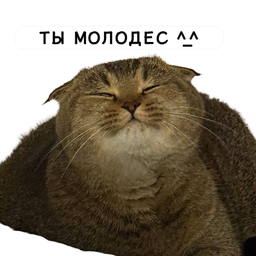

Прогресс
Статистика
Слова
Фразы
Аудио
🎯 Темы
УРОВЕНЬ 1
❤️❤️
Учимся...
🔊
Что тебе интересно?
🏎 Автомобили
🛍 Байер (Люкс)
🚛 Дальнобойщики
🥊 Единоборства
⚽️ Футбол
Сохранить и Начать
ОТРАБОТКА ОШИБОК
...
🔊
Выйти
Опыт
0 XP
Уровень
1
Слов
0
Фраз
0
ТОП ПШЕКОВ 🏆
СБРОСИТЬ ПРОГРЕСС

Продолжить
🔥 (
0
)